Homepage
Biodata
Experience
Education
Family
Gallery
Others
My Experiences
- Work Exprience 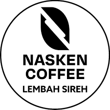 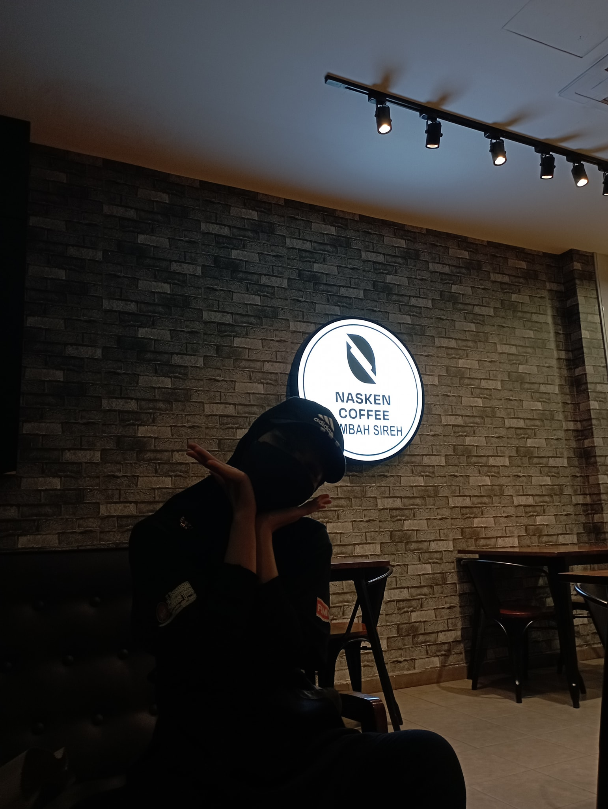 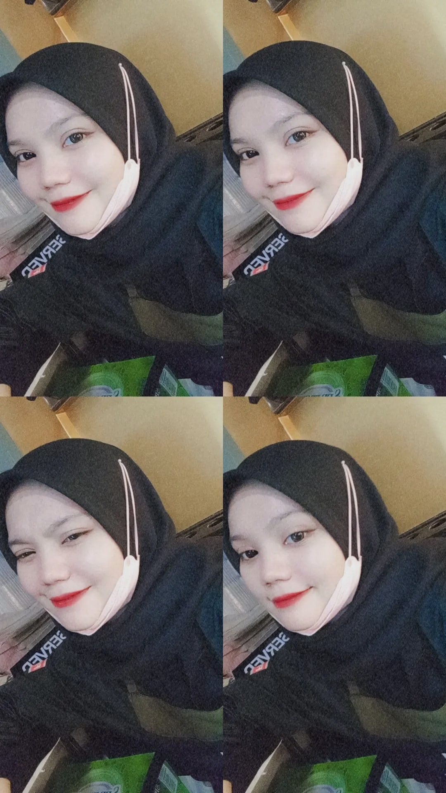
A Barista on cafe
ꕥ I have worked as a barista at Nasken Coffee located at Lmebah Sireh, Kota Bharu for 7 month. Thus, I have learnt many things like make coffee,beverages, learnt how to opening and closing the cafe. As a result, I really enjoyed working at this cafe as I really like this kind of works. Despite of my studies, I manage to work while study as I need to divide time equally and smoothly. Since I have to pursue my studies at college, I have to quit this job, and planning to continue it after graduate.
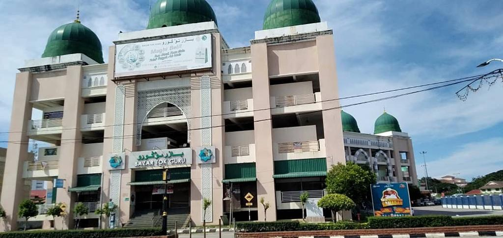
Seller assistant
ꕥ After my SPM examination ended, I have worked as seller assistant at clothes shop in Bazaar Tokguru, Kota Bharu for 4 month. As a assistant, I do works like count clothes stock, open the shop, serve the counter and cleaning.
- School Activity Experience
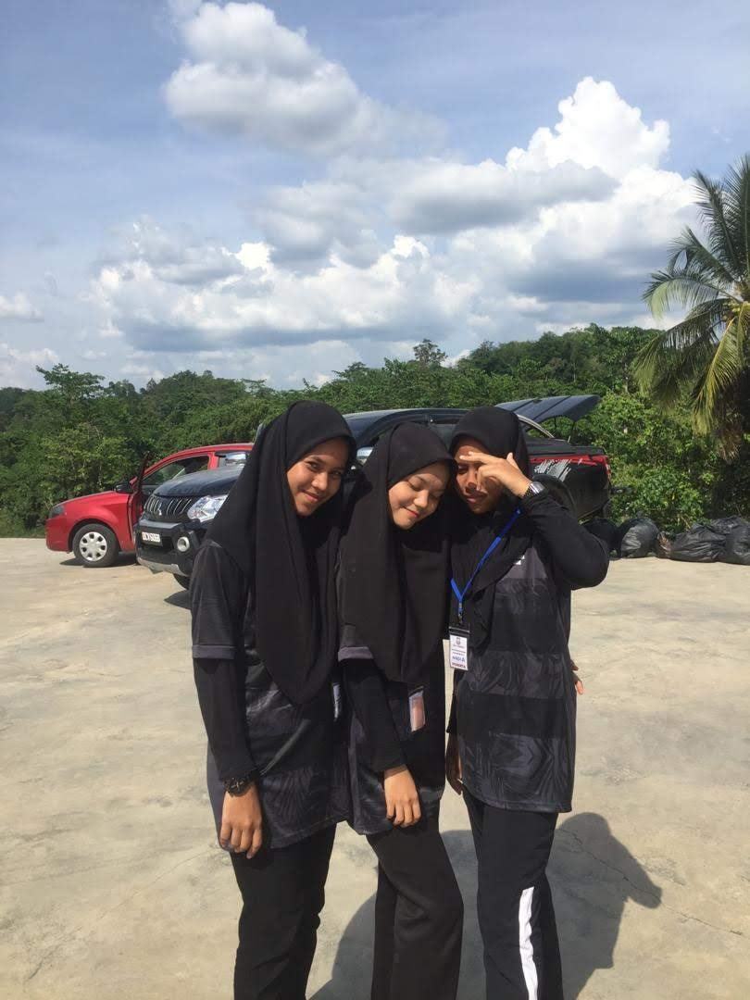 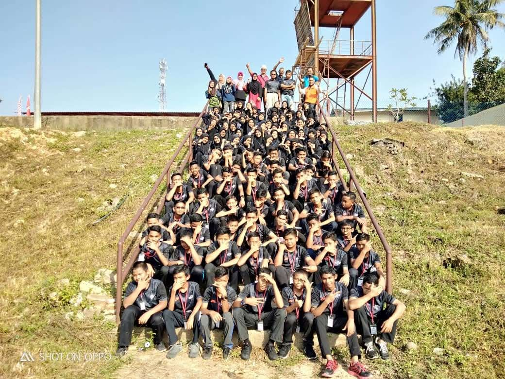
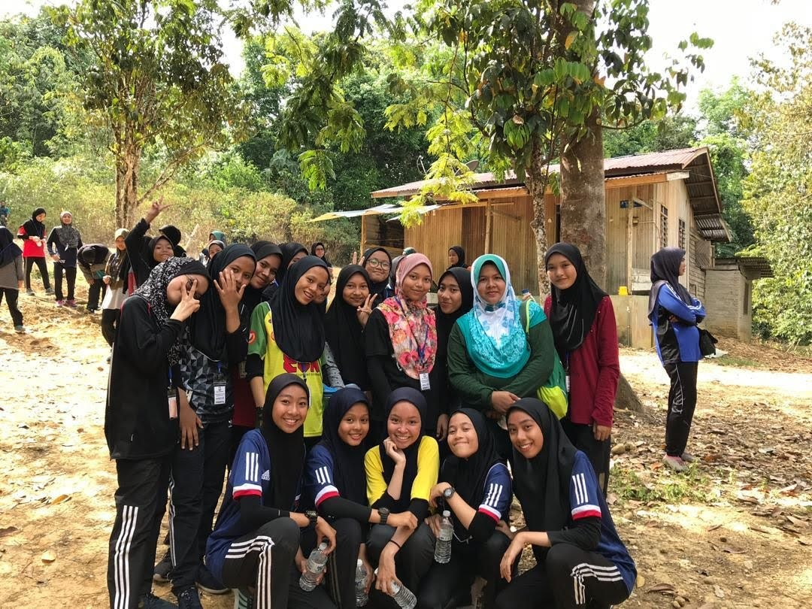 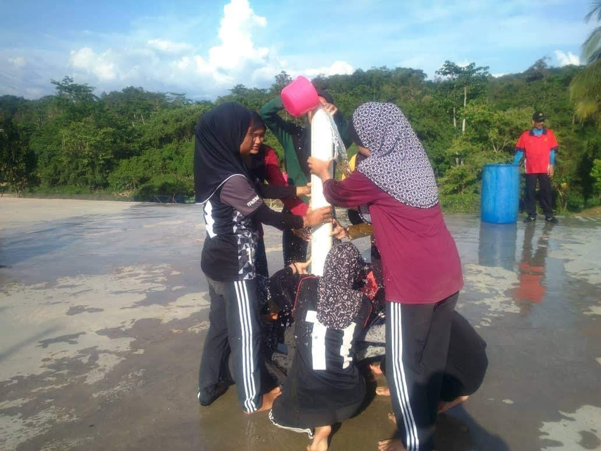
International School Camping
ꕥ Before my SPM examination, I had joined a international school camping for 5days 4nights. A total of 50 students has joined the event, it was held near a thick forest at Gua Musang,Kelantan, and also joined with students from other school too.
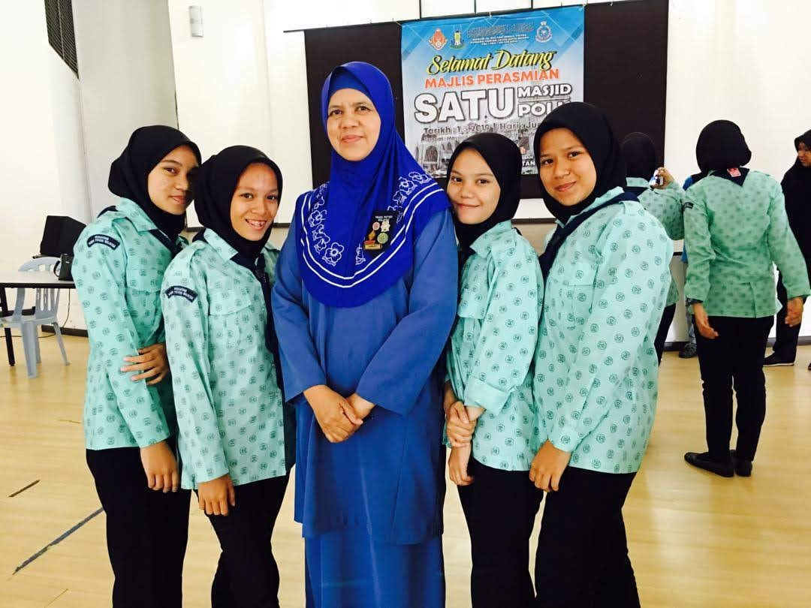 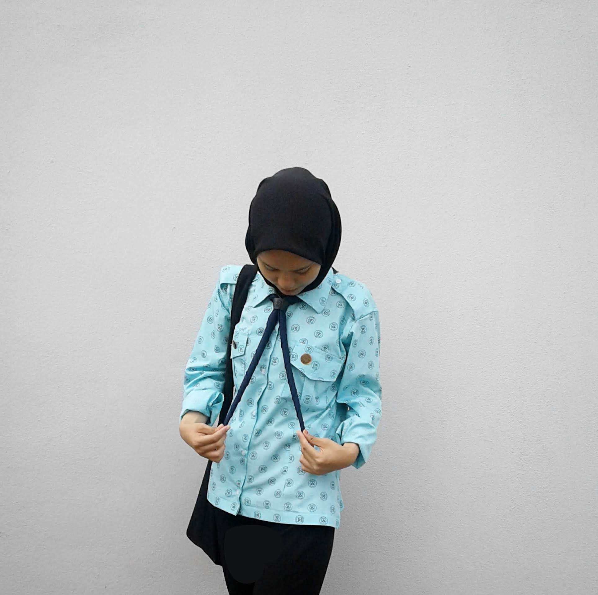
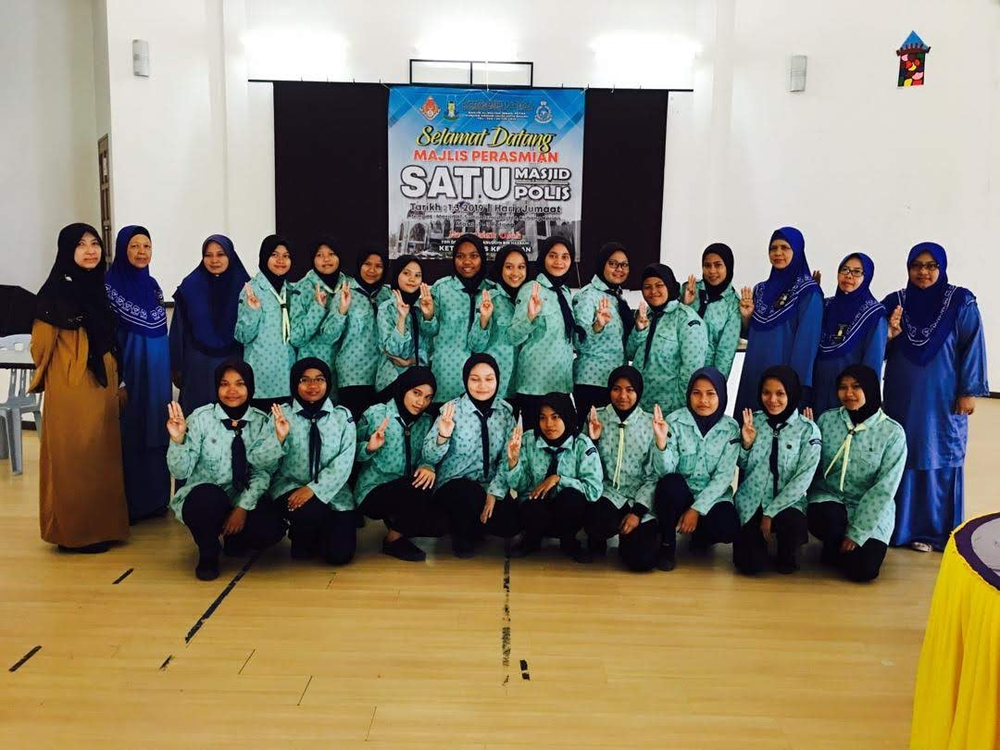
Girls Scout meet and greet
ꕥ I was one of representive the girls scout from my school. As a vice- president, I hold the event perfectly and joined the program activity while handling my team
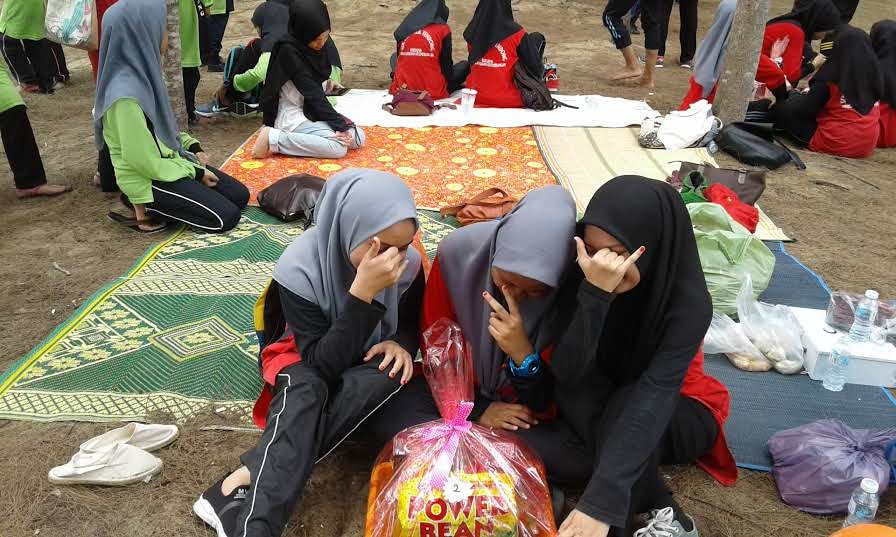
Communal work at beach
ꕥ I actively joined this event as a volunteer of loving nature by doing a communal work, based on this picture, my team and I have won the best volunteer in this event